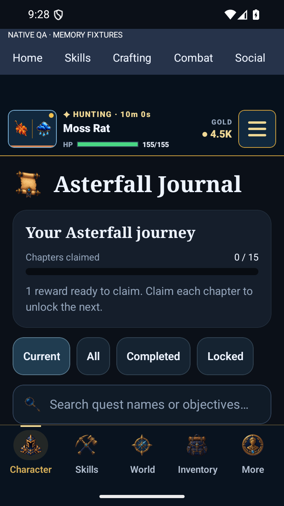
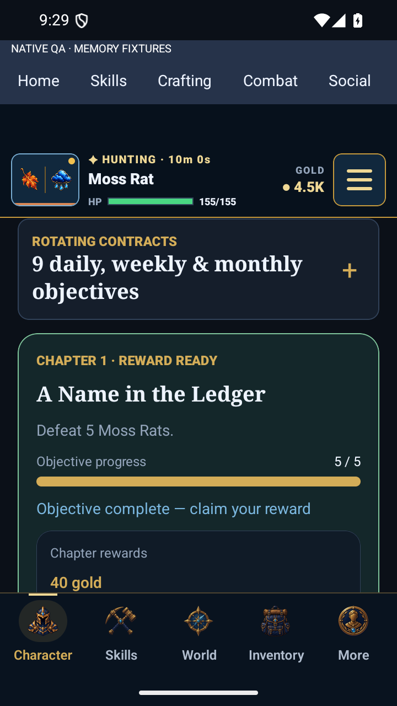
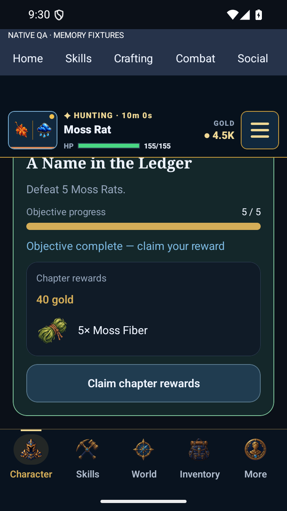
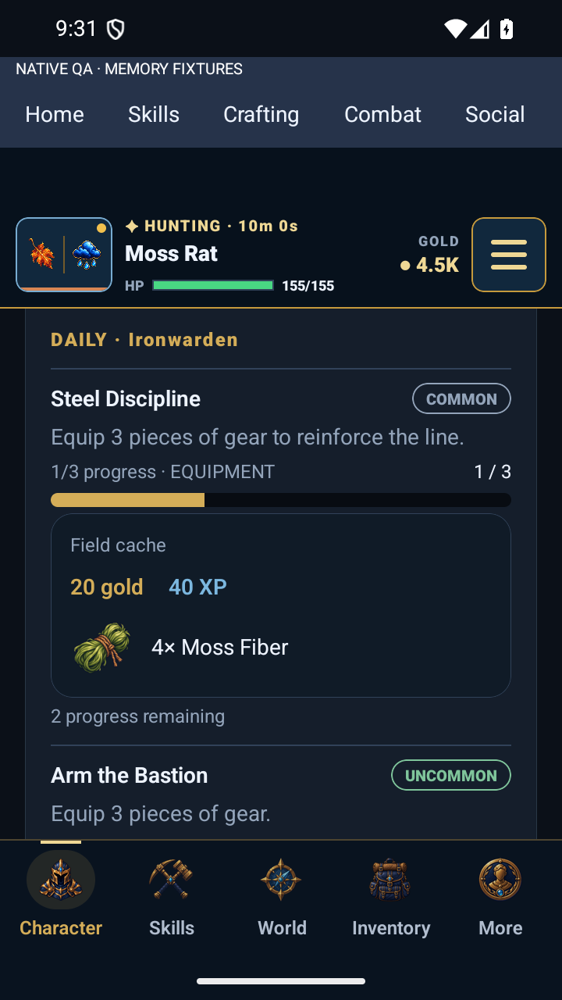

VELDRYN · Journal rewards
Illustrated chapter and contract rewards, clearer completion state, and the established journal symbol. Actual Android screenshots using memory-only fixtures.
Implementation and verification · Specification

Journal heading and chapter summary
Reward-ready chapter treatment
Illustrated reward and explicit claim action
Contract rarity, currencies and item reward